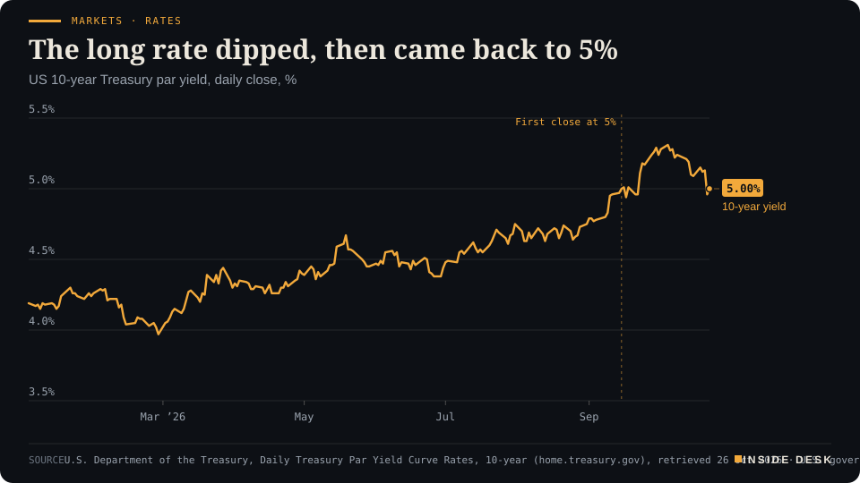
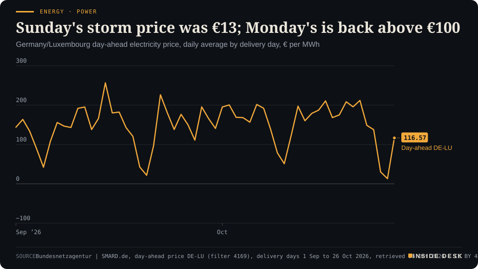
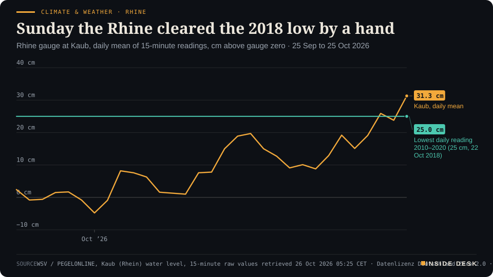

Inside Desk ePaper, Morning ePaper · Mon 26 Oct 2026
Monday, 26 October 2026Always free
Inside Desk
Morning ePaperAvailable 06:30 CET · Berlin
Lead · Markets & Macro
Oil eased on Monday morning because mediators flew to Tehran. The US ten-year yield closed Friday back at 5.00%. This week three central banks set the price of money and three hyperscalers show what they spent it on.
Oil eased on a flight to Tehran, not a ceasefire. The US ten-year closed Friday at 5.00% before three central banks and three hyperscalers report. A storm sold German power at €13 on Sunday, the Rhine cleared its 2018 low, and Brazil counted to 100%. Eleven desks, every number sourced.
Markets · RatesThe long rate dipped, then came back to 5%US 10-year Treasury par yield, daily close, %

Line chart of the daily US 10-year Treasury par yield since January 2026. It starts the year at 4.19% on 2 January, is at its low of 3.97% on 27 February, rises through the summer to 4.75% at the end of August, closes at 5.00% for the first time on 15 September, peaks at 5.31% on 5 October, falls to 4.96% on Thursday 22 October and is back at 5.00% on Friday 23 October 2026, the latest value.
Source: U.S. Department of the Treasury, Daily Treasury Par Yield Curve Rates, 10-year (home.treasury.gov), retrieved 26 Oct 2026 · U.S. government data, public domain · CSV
Geo-economics · p. 4
Energy & Industry · p. 8
Climate & Weather · p. 14
The day in one sentenceOil eased because mediators flew to Tehran, not because anything was signed; this week the central banks and the big tech companies show their paperwork, and the paperwork usually wins.
ContentsInside Desk · Morning ePaper26 October 2026
Oil eased on a flight to Tehran, not a ceasefire. The US ten-year closed Friday at 5.00% before three central banks and three hyperscalers report. A storm sold German power at €13 on Sunday, the Rhine cleared its 2018 low, and Brazil counted to 100%. Eleven desks, every number sourced.
11 edition pieces · 11 desks · Available 06:30 CET, 26 October 2026
22 ePaper extras, added , 26 October. They appear only in the ePaper and carry their own time.
The website edition follows at 08:30.
The ePaper rhythm
06:30 Morning ePaper (website edition at 08:30)
17:30 Evening ePaper, updated live until 22:30 with an “Updated” time and a Latest page
Sun 10:00 The Sunday Magazine
Berlin time. Every issue is free.
How to read it
Swipe, use the arrow keys or the page strip. Tap any headline for the reading view. Press / to search, t for contents, +/− to zoom. Download the PDF.
LeadInside Desk · Morning ePaper26 October 2026
Markets & Macro · Lead · 3 min
Oil eased on Monday morning because mediators flew to Tehran. The US ten-year yield closed Friday back at 5.00%. This week three central banks set the price of money and three hyperscalers show what they spent it on.
Monday began with a small relief and a long diary. Brent crude slipped about 1% to $115.48 a barrel in early Asian trade, after reports that Qatari mediators were in Tehran on Sunday in an effort, coordinated with the United States, to calm the region1. A later Reuters update had it 1.6% lower at $114.882. Last week Brent rose 6.2%, its highest weekly close since mid-2022, because Houthi attacks in Saudi Arabia raised the fear for supply1. Those attacks did not stop over the weekend; Saudi Arabia said it intercepted drones and ballistic missiles aimed at Riyadh and the south on Sunday4. So the barrel came down a dollar or two on a flight plan, not on a ceasefire. You should price it that way too.
The long rate is the referee. The US ten-year Treasury yield closed Friday at 5.00%, according to the Treasury’s own daily curve, after 4.96% on Thursday, the lowest close since 22 September3. It peaked at 5.31% on 5 October and started the year at 4.19%3. Reuters notes that Treasuries rallied last week before “running into renewed selling on Friday”1.
Markets · RatesThe long rate dipped, then came back to 5%US 10-year Treasury par yield, daily close, %
Line chart of the daily US 10-year Treasury par yield since January 2026. It starts the year at 4.19% on 2 January, is at its low of 3.97% on 27 February, rises through the summer to 4.75% at the end of August, closes at 5.00% for the first time on 15 September, peaks at 5.31% on 5 October, falls to 4.96% on Thursday 22 October and is back at 5.00% on Friday 23 October 2026, the latest value.
Source: U.S. Department of the Treasury, Daily Treasury Par Yield Curve Rates, 10-year (home.treasury.gov), retrieved 26 Oct 2026 · U.S. government data, public domain · CSV
That line matters more than any index. A ten-year yield of 5% is the rate against which every other promise is measured: the mortgage, the corporate bond, the data centre that pays back in 2032. When it rises, a distant profit is worth less today. When it falls, as on Thursday, the distant profit looks better and tech shares breathe. Friday’s 5.00% says the bond market has not yet decided which week it is in.
Three committees in three days. The US Federal Reserve meets from Wednesday; futures imply about a 90% chance it holds its target range at 3.75% to 4.00%6. The ECB’s Governing Council meets in Frankfurt on Wednesday and Thursday5. The Bank of Japan decides this week too6. Reuters quotes JPMorgan’s Bruce Kasman: “a relatively shallow rate hike cycle is underway”, with the big three likely on hold for now1. Markets imply about an 80% chance that the Fed moves in December, and “much the same” for the BoJ and the ECB1. New Zealand is widely expected to raise its rate on Wednesday1. A hold, in other words, is not a cut. It is a pause with the next step already in the minutes.
Three invoices. The same week, about a third of the S&P 500 reports, including Alphabet, Microsoft and Amazon1. Consensus, per Reuters, is $90.6 billion of revenue for Microsoft, $202 billion for Amazon and $128 billion for Alphabet1. …
Geo-economicsInside Desk · Morning ePaper26 October 2026
Geo-economics · 2 min
Qatar sent a delegation to Tehran on Sunday. Iran's envoy in Islamabad offered the strait for the blockade; a Revolutionary Guards outlet called a similar report 'lies and fantasy'. Brent believed the aeroplane.
Qatari mediators were in Tehran on Sunday as part of an effort to reduce regional tensions in coordination with the United States, an official briefed on the matter told Reuters1. No details of the talks were published1.
The positions around the visit were public and contradictory. Iran’s ambassador to Pakistan said on Saturday that Tehran had conveyed, through Pakistani mediators, that it was ready to reopen the Strait of Hormuz if Washington ended its blockade of Iranian ports1. The Tasnim news agency, close to the Revolutionary Guards, rejected a similar Al Arabiya report as “lies and fantasy” and said Iran “fundamentally does not accept” such an exchange1. Foreign Minister Abbas Araghchi said a new war would not change his country’s positions2.
The market did not wait for clarity. By 0232 GMT on Monday Brent crude futures were down $2.12, or 1.82%, at $114.60, and US crude was down 2.07% at $101.133. Desk arithmetic: the drop gives back roughly a third of Friday’s gain of nearly $33.
Read that calmly. A delegation is not an agreement, and the Houthi attacks on Saudi Arabia went on over the weekend3. But the oil market has just told you what the conflict’s exit is worth to it: a couple of dollars on a rumour, and much more on a signature. Nothing here is advice.
Geo-economics · Short item · ePaper extra, added
China's Central Committee meets from today to Thursday. Unusually, a fifth plenum is not about the economy: the five-year plan was done a year early.
The 20th Central Committee of the Communist Party of China began its fifth plenary session in Beijing on Monday morning, Xinhua reported; Xi Jinping delivered a work report and explained a draft decision on “strengthening full and rigorous Party self-governance with perseverance”1. The meeting runs until 29 October2.
The order has changed. A fifth plenum usually lays out the next five-year plan, but the fourth plenum in October 2025 already adopted the recommendations for the 15th Five-Year Plan, so this one turns to supervision, assessment and accountability of officials2. It comes about a year before the 21st Party Congress2.
For the outside world the economic signal is indirect. Chinese blue chips fell 1.0% on Monday and have fallen for 11 weeks straight on worries about domestic demand3. A meeting about how officials are graded will not change that this week. It may change, over years, which local projects get approved, and that is where demand comes from. Watch the communiqué on Thursday.
Geo-economics · Brief · ePaper extra, added
Goldman Sachs has outlined a scenario in which oil climbs to $120 a barrel if attacks on vessels in the Middle East escalate, and one in which a return to normal export levels brings it down towards $80, The Economic Times reported, citing Reuters1. Daan Struyven, co-head of global commodities research, said shipping risks had become a key driver of prices1. JPMorgan analysts said the war’s trajectory remained difficult to assess1.
Desk arithmetic: from Monday morning’s $115, the escalation case is about $5 away and the normalisation case about $35. The market is priced far closer to the bad lane than the good one. That is what a strait is worth when it is closed. Nothing here is advice.
Markets & MacroInside Desk · Morning ePaper26 October 2026
Markets & Macro · Short item · ePaper extra, added
South Korea's main index has shed nearly 20% this month. Chinese blue chips have fallen for eleven weeks in a row. Asia is pricing the AI bill before the hyperscalers send it.
South Korea’s main index fell 1.1% on Monday morning, having shed almost 20% so far this month, Reuters reported1. AP put the Kospi at 5,494.292. Japan’s Nikkei dipped 0.5% after losing 4.0% last week1.
China’s market is falling for a different reason. Chinese blue chips lost 1.0% as the Communist Party’s fifth plenum began in Beijing; the market has now fallen for 11 weeks straight amid concerns about domestic demand, even as exports remain strong1. Hong Kong’s Hang Seng edged 0.2% higher to 23,137.932.
Desk view: Korea is the purest AI-hardware market in the world, which is why it rose so far and is now falling so hard. A fifth off in a month is a repricing of expectations, not of factories. The memory chips still ship. Whether the price paid for them holds is what Microsoft, Alphabet and Amazon will show this week1. Nothing here is advice.
Markets & Macro · Brief · ePaper extra, added
Gold was “a fraction firmer” at $4,001 an ounce early on Monday, having fallen more than 4% last week, Reuters reported1. In the same week Brent rose 6.2%1. The yen did the hiding instead: it gained around 0.8% last week and held at 157.00 per dollar1.
A non-interest-bearing metal competes with a ten-year Treasury paying about 5%. When yields are that high, holding gold has a visible cost, war or no war. Safe havens are relative prices, not feelings. Nothing here is advice.
Politics & InstitutionsInside Desk · Morning ePaper26 October 2026
Politics & Institutions · 2 min
Lula won Brazil's runoff with 51.79% after losing the first round, something no runner-up had done since democracy returned. Turnout did it. Flávio Bolsonaro says it is 'impossible to concede'.
With 100% of votes counted, Luiz Inácio Lula da Silva received 51.79% of the valid vote in Sunday’s runoff and Flávio Bolsonaro 48.21%1. Lula, who turns 81 on Tuesday, has a fourth term1. Reuters reported the result as declared by Brazil’s electoral court2.
The arithmetic of a comeback. Lula lost the first round by 2.2 million votes and won the second by 4.3 million1. Never since the return of democracy in the 1980s had the first-round runner-up won the runoff1. The Guardian points to turnout: abstention fell from a record 21.08% in the first round to 19.21%1. That is not a slogan. It is buses, polling stations and people who came back.
The refusal. Bolsonaro said it was “impossible to concede” and that his lawyers would seek to annul the election, citing a supreme court justice’s decision to extend voting by two hours to 7pm1. The Guardian notes that his own campaign had also asked the court to extend voting hours1.
The institution to watch is the dull one. Brazil counts electronically and fast; by Sunday night the result was complete1. A complaint goes to judges who work from documents. That is where a contested result should go, and where it should stay.
Politics & Institutions · Short item · ePaper extra, added
France escaped a downgrade on Friday. Moody's spelled out its conditions: a deficit-reducing 2027 budget and calmer streets. The ten-year yield had hit 5.14% the day before.
Moody’s left France’s rating at Aa3 on Friday, with the negative outlook it has carried since last October, Reuters reported; bond markets had been pricing a downgrade1. “The Aa3 rating assumes that a deficit-reducing budget for 2027 will be adopted, while financing costs and social tensions will abate somewhat in the next few months,” the agency said1.
The conditions are concrete. The 2027 bill targets a deficit of 5% of output against 5.4% this year, but the lower house has already scrapped some savings1. On Thursday France’s ten-year yield hit 5.14%, its highest since July 2002, and the premium over German bonds reached a 15-year high1. On Monday the euro held at $1.1204 as “political unrest in France kept investors wary”2.
A rating is a dull paragraph that decides what a country pays to borrow. Moody’s has written down what would change its mind. That is more useful than any speech in the Assemblée this week.
John Healey, Britain’s Chancellor, delivers his first Budget in the Commons on Wednesday 28 October at about 12:30, with the Office for Budget Responsibility’s economic and fiscal forecasts1. In July he promised it would be “built on fiscal discipline” and would “meet our fiscal rules”2. Reuters notes the backdrop: rising global borrowing costs and high energy prices from the Iran war; sterling held at $1.3346 on Monday3.
The speech will be about postcodes. The OBR’s tables will be about gilts. Read the tables.
Psychology & BehaviourInside Desk · Morning ePaper26 October 2026
Psychology & Behaviour · Podium vs Print · 2 min
A bank economist calls this year's rate rises shallow. Households tell the ECB they expect 3.1% inflation. Both can be right.
Podium
“The main message from global central banks grappling with this year's macroeconomic surprises is that a relatively shallow rate hike cycle is underway.”
Bruce Kasman, global head of economics at JPMorgan, quoted by Reuters, 26 October 2026
Print3.1%
Households' median expected inflation for the next 12 months, up from 3.0%. They also expect the economy to shrink by 1.5%.
ECB Consumer Expectations Survey, September 2026, Published 23 October 2026
The podium. “The main message from global central banks grappling with this year’s macroeconomic surprises is that a relatively shallow rate hike cycle is underway,” JPMorgan’s Bruce Kasman said, quoted by Reuters on Monday1.
The print. In the ECB’s euro area household survey, published on Friday, expected inflation for the next 12 months rose to 3.1% from 3.0%2. Households expect the economy to shrink by 1.5% over the next year, worse than the 1.2% fall they expected in August, and unemployment to reach 11.3%2.
The gap. The economist describes interest rates; the household describes its budget: expected spending growth rose to 3.7% from 3.6% while expected income growth was only 1.1%2. Desk arithmetic: households expect their spending to grow more than three times as fast as their income. That gap is paid for with savings or credit.
The verdict. Both can be true: few, small rate rises, and households squeezed anyway. Three years out, households still expect 2.9%, as in August2. That anchor is what the central bank guards, and so far it holds.
Psychology & Behaviour · Short item · ePaper extra, added
A price portal's readers voted on Monday: wait.
HeizOel24, a German price-comparison portal, runs a standing reader poll: buy now, or wait? On Monday morning 82% said wait and 18% said buy, with the price at €174.34 per 100 litres1. One commenter urged everyone to buy fast because the Saudis were under attack; another quoted Gadamer on the other side possibly being right1.
Desk view: waiting feels like control when prices are high, but it is often a bet that the recent past will reverse. The calm alternative is to know your tank level and how many weeks of heat it holds. A deadline turns a mood into a plan. Nothing here is advice.
In the ECB’s September survey, households in the bottom income quintile expected unemployment of 13.6% in a year; those in the top quintile expected 9.7%1. The bottom fifth expected mortgage rates of 5.7% in a year, the top fifth 4.4%1. Lower-income respondents also reported higher inflation perceptions and expectations; younger people, aged 18 to 34, reported lower ones than older people1.
Expectations are not a forecast. They are a description of where you stand. People closer to the edge see the edge more clearly.
Energy & IndustryInside Desk · Morning ePaper26 October 2026
Energy & Industry · 2 min
German onshore wind passed 1,000 GWh on both weekend days, gas burned a sixth of what it did on Wednesday, and Sunday's power cleared at €13.12. The wind is dropping, and Monday's price has climbed back.
Onshore wind turbines in Germany generated 1,009.2 gigawatt hours on Saturday and 1,019.9 GWh on Sunday, according to SMARD, the Bundesnetzagentur’s data portal1. A week earlier, on Wednesday 21 October, they made 242.3 GWh1. Gas-fired plants went the other way: 241.4 GWh on Wednesday, 42.5 GWh on Saturday and 43.5 GWh on Sunday1. Desk arithmetic: gas burned about a sixth of Wednesday’s amount. (Sunday had 25 hours, as the clocks went back.)
Energy · PowerSunday's storm price was €13; Monday's is back above €100Germany/Luxembourg day-ahead electricity price, daily average by delivery day, € per MWh

Line chart of the daily average German-Luxembourg day-ahead electricity price from 1 September to 26 October 2026, in euros per megawatt hour. It averages €144.82 in September, peaks at €256.55 on 14 September, reaching €211.94 for delivery on 21 October. It then falls to €148.61 on 22 October and €137.59 on 23 October, drops to €30.12 on Saturday 24 October and €13.12 on Sunday 25 October as storm-driven wind output passed 1,000 GWh a day, and climbs back to €116.57 for delivery on Monday 26 October, the latest value.
Source: Bundesnetzagentur | SMARD.de, day-ahead price DE-LU (filter 4169), delivery days 1 Sep to 26 Oct 2026, retrieved 26 Oct 2026 · CC BY 4.0 · CSV
The auction followed the weather. The German-Luxembourg day-ahead price averaged €211.94 per megawatt hour for delivery on 21 October, €30.12 on Saturday and €13.12 on Sunday1. For Monday it is €116.571. Desk arithmetic: Monday’s power costs about nine times Sunday’s, and still about 45% less than last Wednesday’s.
The month as a whole is still dear. Over 1 to 26 October the daily price has averaged €154.41, against €85.93 over the same days of 20251. A windy weekend does not repay a month. And the Deutscher Wetterdienst expects a “transition to calm high-pressure weather” from midweek, cooling to average late-October temperatures2. Calm and cool is the combination that brings gas back into the merit order.
The lesson is not that wind is cheap on a stormy Sunday; everyone knows that. It is that the system had the turbines, the lines and the auction ready when the storm came, in the same week Brent had its best week since 2022. That is what boring, finished infrastructure looks like in a crisis. Nothing here is advice.
Energy & Industry · Short item · ePaper extra, added
Brent settled Friday at $116.72, its highest settlement since 29 April, and closed the week up 6.2%. By Monday morning in Asia it was below $115.
Brent futures gained 3.1% on Friday to settle at $116.72 a barrel, the highest settlement since 29 April; WTI rose 3.8% to $103.271. Brent added 6.2% over the week, its third weekly gain in a row, and Reuters called it the highest weekly close since mid-20221,3.
On Monday, by 0232 GMT, Brent was down $2.12 at $114.60 and WTI down $2.14 at $101.132. …
Energy & Industry · Brief · ePaper extra, added
At 05:18 on Monday, gasoil, the wholesale middle distillate behind both diesel and heating oil, stood at $1,468.25 a tonne, down 0.73%1. The German heating oil average moved 0.03% lower1. HeizOel24’s weekly market note says Russian diesel deliveries have resumed under the agreement with the US and that IEA countries want to release their remaining emergency reserves faster, diesel included; that pulled gasoil down towards the end of last week1.
Reserves released are stocks drawn down. They buy time, not supply.
Money, FX & CommitteesInside Desk · Morning ePaper26 October 2026
Money, FX & Committees · 2 min
The Fed, the ECB and the Bank of Japan all decide this week, and all are expected to hold. The price of money is now set less by what they do than by what they write about December.
The ECB is widely expected to leave its deposit rate at 2.5% on Thursday, after raising it in June and September as the Iran war pushed up energy prices; most economists polled by Reuters expect a quarter-point rise in December2. The Fed meets from Wednesday, and futures put the chance of an unchanged target range of 3.75% to 4.00% at about 90%4. The Bank of Japan decides this week as well4.
The decisions are not the news. Markets imply about an 80% chance of a Fed move in December, and “much the same” for the Bank of Japan and the ECB1. Goldman Sachs analysts, quoted by Reuters, expect the Fed to “skip raising rates at its October meeting” and deliver a second rise in December1. They name the risk plainly: oil futures above their forecasts1.
So this week’s real output is text. The ECB’s statement, the Fed’s statement, the press conferences. Each will either confirm December or leave it open. The bond market will read every comma, and so, a little later, will your bank’s mortgage desk.
There is dull machinery around the drama too. Before the council meets, the ECB publishes its survey on companies’ access to finance today and the Bank Lending Survey on Tuesday3. Those two papers tell the council whether its June and September rises are already reaching borrowers. They are the committee’s homework, and they arrive on time. Nothing here is advice.
Money, FX & Committees · Short item · ePaper extra, added
While the Fed, the ECB and the Bank of Japan are expected to hold, markets and most bank economists expect the Reserve Bank of New Zealand to raise its rate to 3.00%.
The Reserve Bank of New Zealand publishes its Monetary Policy Review and official cash rate on Wednesday 28 October at 14:00 New Zealand time1. Reuters says it is “widely expected” to raise rates3; ING expects a quarter-point rise, citing inflation risks2. Desk arithmetic, from the expected 25 basis points: 2.75% to 3.00%.
Small central banks often move before big ones because their currencies and import bills feel the oil shock first. New Zealand imports its fuel and has a currency that weakens when the world is nervous. Its committee is the early sentence in a paragraph the larger ones will finish later. JPMorgan’s Bruce Kasman expects Canada to start tightening and first moves from the UK and Sweden next month3. Nothing here is advice.
Money, FX & Committees · Brief · ePaper extra, added
The ECB’s calendar for this week lists the survey on the access to finance of enterprises (SAFE) and the autumn release of annual government finance statistics on Monday at 10:00, then monetary developments in the euro area and the euro area Bank Lending Survey on Tuesday at 10:001. On Tuesday evening Christine Lagarde and the Governing Council have an informal dinner with EU Trade Commissioner Maroš Šefčovič in Frankfurt; no text will be published1. The monetary policy meeting follows on Wednesday and Thursday1.
The surveys are where a rate rise shows up as a refused loan or a dearer one. Read them before the press conference, not after.
Ordinary & Inherited LifeInside Desk · Morning ePaper26 October 2026
Ordinary & Inherited Life · 2 min
The German average for 100 litres is €40.79 dearer than three months ago. Brent fell overnight; the heating oil price barely moved. A 3,000-litre order now costs about €5,230.
A hundred litres of heating oil cost €174.34 on the German average on Monday morning, for a 3,000-litre order, according to HeizOel241. That is 0.03% less than the day before, €3.70 more than a week ago and €40.79 more than three months ago1. The three-year range runs from €85.59 on 1 June 2025 to €179.02 on 16 September 20261.
The ledger. Desk arithmetic: a 3,000-litre delivery costs about €5,230 at today’s average, some €1,224 more than the same order three months ago and about €140 below the September high. The portal’s own rule of thumb: a litre of heating oil gives about 10 kWh, so today’s price works out at about 17.4 cents per kWh of heat1.
The exchange. At 05:18, Brent stood at $114.40 a barrel, down 0.97%, and gasoil, the wholesale product, at $1,468.25 a tonne, down 0.73%1. Only about half of what you pay comes from the oil itself; energy tax, the CO₂ levy and VAT make up much of the rest1.
The mood. In HeizOel24’s reader poll, 82% say they would wait and 18% would buy1. On Friday the “wait” side stood at 90%, by this desk’s earlier reading of the same poll. A poll is not a forecast, and an order, once placed, cannot be cancelled; the price holds until delivery, usually two to four weeks1. Nothing here is advice.
Ordinary & Inherited Life · Short item · ePaper extra, added
ADAC's weekly comparison: petrol is passing on the fuel tax cut, diesel is following heating oil. Prices are lowest just before noon.
In ADAC’s latest weekly comparison, a litre of Super E10 cost €2.110 on the German average, 4.1 cents less than a week earlier, while diesel rose 0.8 cents to €2.2551. ADAC says most of the fuel tax cut now seems to be reaching the pump for petrol, and that rising heating oil demand at the start of the cold season is weighing on diesel1.
Desk arithmetic: a 50-litre tank of E10 costs about €105.50 at that average, and the same tank of diesel about €112.75.
ADAC’s practical observation is about the clock, not the market: prices are lowest shortly before 12:00, rise sharply at noon and then fall slowly1. Its app compares prices at more than 14,000 stations1. The next weekly comparison is due this week. Nothing here is advice.
Ordinary & Inherited Life · Brief · ePaper extra, added
Germany’s CO₂ price for heating and transport fuels sits in a fixed corridor of €55 to €65 per tonne in 2026 and 2027, before moving into the EU’s ETS 2 from 20281. HeizOel24’s table converts that into 17.4 to 20.6 cents per litre of heating oil, 17.3 to 20.5 cents for diesel, 15.5 to 18.3 cents for petrol and 13.2 to 15.5 cents per cubic metre of natural gas1. VAT of 19% is charged on top of all of it1.
Desk arithmetic: on a 3,000-litre heating oil order, the levy is between about €522 and €618 before VAT.
Tech & ComputeInside Desk · Morning ePaper26 October 2026
Tech & Compute · 2 min
A Korean newspaper says the memory maker is weighing a special dividend of about 16 trillion won, roughly $12 billion, from selling its Kioxia stake. The company says nothing is decided. Wednesday's results will say.
SK hynix is considering a special dividend of about 16 trillion won ($12 billion), funded by gains from selling its stake in the Japanese memory maker Kioxia, the South Korean newspaper Dong-A Ilbo reported on Monday1. The plan could come with third-quarter results on Wednesday1. CNBC-TV18 reported that the payout would amount to roughly 80% of the sale proceeds2. SK hynix could not be reached outside business hours, Reuters said1.
The market liked it. SK hynix shares were up 1.41% in early trade while the Kospi fell 1.00%3. Tokyo Electron fell 3.24% and Advantest 1.67%3.
Why it matters beyond Seoul: the AI trade has been an argument about whether spending will ever return cash. A memory maker handing back a one-off gain is a small, real answer: some of the boom’s profit is already in a bank account, and a board can decide to send it to shareholders. That is a duller signal than a product launch, and a more trustworthy one.
But a newspaper report is not a board decision. Wait for Wednesday’s filing.
Tech & Compute · Short item · ePaper extra, added
Consensus: Microsoft $90.6 billion, Amazon $202 billion, Alphabet $128 billion. Intel and Sandisk report too. The number that matters is the one after revenue: what they spend.
About a third of S&P 500 companies report this week, Reuters notes, including the hyperscalers Alphabet, Microsoft and Amazon1. Consensus on Microsoft is $90.6 billion of revenue and adjusted earnings per share of $4.73; on Amazon, $202 billion and about $1.97; on Alphabet, $128 billion and $3.001. Results from Intel and Sandisk “also could influence the AI trade”1.
The other side of those invoices is already visible. A closely watched US chip index extended its losing run on Friday to the longest since November, and the regional Asian benchmark is down more than 6% this month, CNBC-TV18 reported2. It describes the year-long question plainly: whether profits justify the sums being poured into AI2.
Desk view: revenue tells you who is paying. Capital expenditure tells you who is being paid: the chipmakers, builders and utilities. Read both lines. Nothing here is advice.
Tech & Compute · Brief · ePaper extra, added
In early trade on Monday Tokyo Electron fell 3.24% and Advantest 1.67%, while SoftBank Group rose 0.35% and Samsung Electronics fell 0.70%1. The Nikkei 225 was down 0.45% and the broader Topix up 0.32%1. About 550 of the roughly 1,200 companies in the MSCI Asia Pacific index report results this week1.
When the broad index rises and the chip-tool makers fall, the market is not leaving Japan. It is leaving one bet.
Health & CareInside Desk · Morning ePaper26 October 2026
Health & Care · 2 min
Congo's bulletin for 23 October counts 9,876 confirmed cases and 4,803 deaths. The seven-day average of new cases fell to 65.9 from 71.6; deaths rose to 38.1 a day from 31.6.
The Democratic Republic of the Congo’s bulletin for 23 October reports 60 new confirmed Ebola cases and 46 deaths1. Since the Bundibugyo outbreak began there have been 9,876 confirmed cases and 4,803 deaths; 48.6% of patients have died1.
The weekly view is mixed. Over the past seven days the outbreak averaged 65.9 new cases and 38.1 deaths a day, against 71.6 cases and 31.6 deaths the week before1. No new health zone has been affected since 16 October; the outbreak remains in 66 zones across eight provinces1. Desk arithmetic: cases a day fell by about 8%, deaths a day rose by about 21%.
Of the 46 deaths, 31 happened in the community, outside a treatment centre1. That is the number to worry about: a death at home is a death the system did not reach in time, and often a body handled without protection.
The machinery is working, unevenly. Teams followed up 88.4% of contacts that day, 32,023 of 36,2181. Since 26 August, 9,415 people have received the Ervebo vaccine1. Positive tests were 13.3% of 450 samples1. None of these figures will trend online. All of them decide how this ends.
Health & Care · Short item · ePaper extra, added
Across Congo, Ebola treatment centres hold 56 patients per 100 beds. In Nord-Kivu it is 447 patients for 410 beds, and 107 patients are treated outside the centres.
National averages hide the strain. Congo’s Ebola treatment centres held 900 patients for 1,619 beds on 23 October, 56 per 1001. Nord-Kivu was beyond capacity: 447 patients for 410 beds, with 107 of them treated outside the centres and beds for suspected cases 91.7% occupied1.
The bulletin’s list of difficulties is specific and sobering. In Ituri blood is short and 11 patients in Mandima were not fed; in Haut-Uélé a confirmed patient escaped from the Boma Mangbetu centre and vaccination has stopped; in Tshopo a nurse has been infected1. Nord-Kivu reported 29 of the day’s 60 new cases and Ituri 281.
The vaccine in use, Ervebo, was made for a different strain, and Congo has begun a trial as the outbreak continues2. Desk view: an outbreak response is a logistics chain. Beds, food, blood, transport. The places where the chain breaks are named in the bulletin. That is where money helps most.
Health & Care · Brief · ePaper extra, added
As of 22 October, 4,588 confirmed measles cases were reported in the United States in 2026, from 47 jurisdictions; 96% are outbreak-associated, and 43 new outbreaks have been reported this year1. The 2025 total was 2,2891. Kindergarten MMR coverage fell from 95.2% in 2019–20 to 92.4% in 2025–26, leaving about 280,000 children at risk1. Two doses are 97% effective1.
Desk arithmetic: 2026 has already doubled 2025. Coverage of 95% is the line; three points below it is an outbreak map.
Security & OrderInside Desk · Morning ePaper26 October 2026
Security & Order · 2 min
Saudi Arabia says it intercepted Houthi ballistic missiles, drones and a cruise missile on Sunday. The same day, Riyadh's main airport resumed operations, two weeks after the deadliest attack on the kingdom in over a decade.
The Saudi-led coalition in Yemen said on Sunday that two drones and a ballistic missile heading for Riyadh were “intercepted and destroyed”, as were 10 ballistic missiles launched towards the kingdom’s southern region and a cruise missile aimed at Khamis Mushait1. The Houthis said they had “carried out seven qualitative military operations”, naming Riyadh’s King Khalid International Airport and Saudi Aramco facilities in Yanbu among their targets1. Saudi Aramco did not immediately respond to CNBC1.
The airport said it was resuming operations on Sunday, using Terminal 1 for domestic flights and Terminal 2 for international routes1. It had suspended operations on 10 October after a strike that killed at least 13 people and injured around 300, the deadliest attack on Saudi Arabia in more than a decade1.
The US ordered non-emergency government staff and their families to leave Saudi Arabia last week1. Reuters reports the Houthis said they attacked the airport and oil facilities again on Saturday2.
What you can take from it: the interceptions worked on Sunday, and an airport reopened under fire. Both are the work of people doing shifts. Neither guarantees next week.
Security & Order · Short item · ePaper extra, added
The UAE environment ministry reported an oil spill from a tanker off its coast. It did not say what caused it or which ship it was.
An oil spill from a tanker was detected off the coast of Umm Al Quwain in the United Arab Emirates, the country’s Ministry of Climate Change and Environment said, according to Reuters1. The ministry did not disclose the cause, and the vessel had not been identified1.
It is a small item in a crowded week, and it should stay a fact until there is more. Iran has claimed control over the Strait of Hormuz since the war began and has regularly targeted vessels crossing without its authorisation; the US maintains a counter-blockade of Iranian ports2. In waters like these, a spill can be an accident, a collision or an attack. The ministry has not said which, and neither should anyone else yet.
Desk view: the first job after a spill is containment booms and samples, not attribution. Coastal agencies that publish quickly and say what they do not know are doing it right.
Security & Order · Brief · ePaper extra, added
Many voters in São Paulo were angry at an apparent attempt by pro-Bolsonaro politicians to derail Sunday’s vote by sabotaging public transport in Lula-leaning areas, The Guardian reported; it said the alleged attempt failed1. Abstention fell to 19.21% from 21.08% in the first round1. Flávio Bolsonaro’s father, the former president, is serving a 27-year sentence for plotting a coup1.
Order on election day is buses running and polling stations open until the count. Both held.
Climate & WeatherInside Desk · Morning ePaper26 October 2026
Climate & Weather · 2 min
After four weeks below the worst day of 2018, the Kaub gauge averaged 31.3 cm on Sunday and read 52 cm at 05:15 on Monday. The weekend storm's rain is reaching the river.
The Rhine at Kaub, the shallowest stretch for shipping between Bingen and Koblenz, averaged 31.3 centimetres on Sunday, by this desk’s daily mean of the 15-minute readings published by the federal waterways administration1. At 05:15 on Monday the gauge read 52 cm1.
Climate & Weather · RhineSunday the Rhine cleared the 2018 low by a handRhine gauge at Kaub, daily mean of 15-minute readings, cm above gauge zero · 25 Sep to 25 Oct 2026

Line chart of the Rhine water level at the Kaub gauge from 25 September to 25 October 2026, as daily means of 15-minute readings in centimetres above the gauge zero, against a flat line at 25 cm, the lowest daily reading of the 2010–2020 reference period, set on 22 October 2018. The daily mean stays below that line for four weeks, falling below zero on several days, with the lowest mean of −4.8 cm on 1 October. It recovers to 19.7 cm on 13 October, dips to 8.8 cm on 18 October, reaches 25.9 cm on Friday 23 October, slips to 23.8 cm on Saturday and climbs to 31.3 cm on Sunday 25 October, the latest full day and the highest daily mean in the period shown.
Source: WSV / PEGELONLINE, Kaub (Rhein) water level, 15-minute raw values retrieved 26 Oct 2026 05:25 CET · Datenlizenz Deutschland Zero 2.0 · daily means: desk arithmetic · CSV
For context: the lowest daily reading of the 2010–2020 reference period was 25 cm, on 22 October 2018. From late September until Thursday this year the daily mean stayed below that line, falling below zero on several days, with a low of −4.8 cm on 1 October1. Friday’s mean of 25.9 cm put it just over; Saturday slipped back to 23.8 cm; Sunday’s 31.3 cm is the highest daily mean since at least 25 September1. Desk arithmetic: Monday’s 05:15 reading is about double the 2018 low.
The gauge number is not the water depth in the channel, which is deeper. But it is the number shippers and insurers price on. A few centimetres more at Kaub mean more tonnes per barge, fewer trips and lower freight surcharges, eventually even on heating oil delivered up the Rhine.
Do not expect a flood of relief. The Deutscher Wetterdienst expects a transition to calm high-pressure weather from midweek, with stormy gusts lingering on the North Sea on Wednesday2. Dry weeks follow storms, and the river remembers both.
Climate & Weather · Short item · ePaper extra, added
The UN biodiversity conference in Yerevan holds its Finance and Biodiversity Day on Monday. The ECB's Frank Elderson opens it. The conference runs until 30 October.
Frank Elderson, a member of the ECB’s Executive Board, gives the opening keynote at Finance and Biodiversity Day at the 17th meeting of the Conference of the Parties to the Convention on Biological Diversity in Yerevan on Monday, at 06:00 CET, 09:00 local time1. The text is to be published on the ECB’s banking supervision website1. The conference opened ceremonially on 18 October2.
Why a central banker at a nature conference? Because supervisors ask banks to count the risks in their loan books, and some of those risks are droughts, floods and failing harvests. On the Rhine this autumn, a low river was a freight cost before it was a headline.
Climate & Weather · Brief · ePaper extra, added
Onshore wind generated 1,009.2 GWh in Germany on Saturday and 1,019.9 GWh on Sunday1. Lignite plants, which made 158.9 GWh on 17 October, made 92.1 GWh on Sunday1. Desk arithmetic: lignite output fell by about two fifths. The DWD expects stormy gusts on the North Sea on Wednesday and then calm high pressure2.
A storm costs roofs and trees. It also, for two days, ran the country’s power on air.
Charts and dataInside Desk · Morning ePaper26 October 2026
Charts and data
Markets · RatesThe long rate dipped, then came back to 5%US 10-year Treasury par yield, daily close, %
Line chart of the daily US 10-year Treasury par yield since January 2026. It starts the year at 4.19% on 2 January, is at its low of 3.97% on 27 February, rises through the summer to 4.75% at the end of August, closes at 5.00% for the first time on 15 September, peaks at 5.31% on 5 October, falls to 4.96% on Thursday 22 October and is back at 5.00% on Friday 23 October 2026, the latest value.
Source: U.S. Department of the Treasury, Daily Treasury Par Yield Curve Rates, 10-year (home.treasury.gov), retrieved 26 Oct 2026 · U.S. government data, public domain · CSV
Energy · PowerSunday's storm price was €13; Monday's is back above €100Germany/Luxembourg day-ahead electricity price, daily average by delivery day, € per MWh
Line chart of the daily average German-Luxembourg day-ahead electricity price from 1 September to 26 October 2026, in euros per megawatt hour. It averages €144.82 in September, peaks at €256.55 on 14 September, reaching €211.94 for delivery on 21 October. It then falls to €148.61 on 22 October and €137.59 on 23 October, drops to €30.12 on Saturday 24 October and €13.12 on Sunday 25 October as storm-driven wind output passed 1,000 GWh a day, and climbs back to €116.57 for delivery on Monday 26 October, the latest value.
Source: Bundesnetzagentur | SMARD.de, day-ahead price DE-LU (filter 4169), delivery days 1 Sep to 26 Oct 2026, retrieved 26 Oct 2026 · CC BY 4.0 · CSV
Latest values
Series
Value
Date
Chart
10-year yield
5.00%
23 Oct 2026
The long rate dipped, then came back to 5%
Day-ahead DE-LU
116.57
26 Oct 2026
Sunday's storm price was €13; Monday's is back above €100
Last data point of each series in the charts above, from the Inside Desk data archive. Sources under each chart.
Back pageInside Desk · Morning ePaper26 October 2026
Before you close the tab
The day in one sentence
Oil eased because mediators flew to Tehran, not because anything was signed; this week the central banks and the big tech companies show their paperwork, and the paperwork usually wins.
One thing you can do this week
This week, when you next pass your heating, look at one number: the oil tank gauge, the gas meter or the thermostat setting. Write it down with the date. Do it again next Monday. Two readings a week apart tell you more about your own winter than any price headline in this edition.
A habit, not advice. Nothing here tells you what to buy, order or switch.
What went right
Germany's onshore wind turbines generated more than 1,000 gigawatt hours on both Saturday and Sunday, and Sunday's day-ahead power price averaged €13.12 per megawatt hour, against €211.94 for delivery on 21 October 1. The storm arrived and the grid was ready to use it.
In euros at home
Heating oil costs €174.34 per 100 litres on Monday's German average for a 3,000-litre order, €3.70 more than a week ago and €40.79 more than three months ago 2. Desk arithmetic: a 3,000-litre delivery costs about €5,230, some €1,224 more than the same order three months ago.
Desk arithmetic on the cited average price. Local prices differ by region, quantity and supplier. Nothing here is advice.
Small words
Day-ahead price
The price of electricity for each hour of tomorrow, set in an auction the day before. Germany's daily average for Sunday 25 October was €13.12 per megawatt hour, and for Monday it is €116.57 1: the wind dropped, and tomorrow's auction noticed.
Commentary for information only. Not investment, legal, tax, medical or political advice. Inside Desk is free and reader-supported. Every number is sourced in the piece it appears in.
This issue has been updated.
All articles in this edition
Markets & Macro · 3 min read
The referees meet in the same week as the invoices
Oil eased on Monday morning because mediators flew to Tehran. The US ten-year yield closed Friday back at 5.00%. This week three central banks set the price of money and three hyperscalers show what they spent it on.
Monday began with a small relief and a long diary. Brent crude slipped about 1% to $115.48 a barrel in early Asian trade, after reports that Qatari mediators were in Tehran on Sunday in an effort, coordinated with the United States, to calm the region1. A later Reuters update had it 1.6% lower at $114.882. Last week Brent rose 6.2%, its highest weekly close since mid-2022, because Houthi attacks in Saudi Arabia raised the fear for supply1. Those attacks did not stop over the weekend; Saudi Arabia said it intercepted drones and ballistic missiles aimed at Riyadh and the south on Sunday4. So the barrel came down a dollar or two on a flight plan, not on a ceasefire. You should price it that way too.
The long rate is the referee. The US ten-year Treasury yield closed Friday at 5.00%, according to the Treasury’s own daily curve, after 4.96% on Thursday, the lowest close since 22 September3. It peaked at 5.31% on 5 October and started the year at 4.19%3. Reuters notes that Treasuries rallied last week before “running into renewed selling on Friday”1.
Markets · RatesThe long rate dipped, then came back to 5%US 10-year Treasury par yield, daily close, %
Line chart of the daily US 10-year Treasury par yield since January 2026. It starts the year at 4.19% on 2 January, is at its low of 3.97% on 27 February, rises through the summer to 4.75% at the end of August, closes at 5.00% for the first time on 15 September, peaks at 5.31% on 5 October, falls to 4.96% on Thursday 22 October and is back at 5.00% on Friday 23 October 2026, the latest value.
Source: U.S. Department of the Treasury, Daily Treasury Par Yield Curve Rates, 10-year (home.treasury.gov), retrieved 26 Oct 2026 · U.S. government data, public domain · CSV
That line matters more than any index. A ten-year yield of 5% is the rate against which every other promise is measured: the mortgage, the corporate bond, the data centre that pays back in 2032. When it rises, a distant profit is worth less today. When it falls, as on Thursday, the distant profit looks better and tech shares breathe. Friday’s 5.00% says the bond market has not yet decided which week it is in.
Three committees in three days. The US Federal Reserve meets from Wednesday; futures imply about a 90% chance it holds its target range at 3.75% to 4.00%6. The ECB’s Governing Council meets in Frankfurt on Wednesday and Thursday5. The Bank of Japan decides this week too6. Reuters quotes JPMorgan’s Bruce Kasman: “a relatively shallow rate hike cycle is underway”, with the big three likely on hold for now1. Markets imply about an 80% chance that the Fed moves in December, and “much the same” for the BoJ and the ECB1. New Zealand is widely expected to raise its rate on Wednesday1. A hold, in other words, is not a cut. It is a pause with the next step already in the minutes.
Three invoices. The same week, about a third of the S&P 500 reports, including Alphabet, Microsoft and Amazon1. Consensus, per Reuters, is $90.6 billion of revenue for Microsoft, $202 billion for Amazon and $128 billion for Alphabet1. Their capital spending is the other half of the AI story: the bills paid to chipmakers, builders and utilities. Asia is already nervous. South Korea’s main index has shed almost a fifth of its value this month, and Japan’s Nikkei lost 4.0% last week1. Tokyo Electron fell 3.24% in early trade on Monday6.
What to do with all this. Nothing quick. The diary this week is a good one, because it is full of dull, scheduled things: decisions at fixed times, statements with numbered paragraphs, earnings reports with audited lines. The war produces headlines at random; the institutions produce documents on time. When the two disagree, the documents usually win, a little later than the headlines suggest.
The one number to watch is not an index level but the ten-year yield on Thursday evening, after the ECB and the Fed have both spoken and the first hyperscaler has shown its capital spending. If it is still near 5%, the market has heard the committees and the companies and stayed calm. If it moves sharply, someone said something that was not in the minutes. Nothing here is advice.
Desk comment A committee that does nothing on Wednesday can still be the most important thing that happens all week. Read the minutes, not the mood.
The mediators flew, the barrel slipped two dollars
Qatar sent a delegation to Tehran on Sunday. Iran's envoy in Islamabad offered the strait for the blockade; a Revolutionary Guards outlet called a similar report 'lies and fantasy'. Brent believed the aeroplane.
Qatari mediators were in Tehran on Sunday as part of an effort to reduce regional tensions in coordination with the United States, an official briefed on the matter told Reuters1. No details of the talks were published1.
The positions around the visit were public and contradictory. Iran’s ambassador to Pakistan said on Saturday that Tehran had conveyed, through Pakistani mediators, that it was ready to reopen the Strait of Hormuz if Washington ended its blockade of Iranian ports1. The Tasnim news agency, close to the Revolutionary Guards, rejected a similar Al Arabiya report as “lies and fantasy” and said Iran “fundamentally does not accept” such an exchange1. Foreign Minister Abbas Araghchi said a new war would not change his country’s positions2.
The market did not wait for clarity. By 0232 GMT on Monday Brent crude futures were down $2.12, or 1.82%, at $114.60, and US crude was down 2.07% at $101.133. Desk arithmetic: the drop gives back roughly a third of Friday’s gain of nearly $33.
Read that calmly. A delegation is not an agreement, and the Houthi attacks on Saudi Arabia went on over the weekend3. But the oil market has just told you what the conflict’s exit is worth to it: a couple of dollars on a rumour, and much more on a signature. Nothing here is advice.
Desk comment Mediation is mostly seating plans and drafts. It never trends, and it is how most wars end.
China's Central Committee meets from today to Thursday. Unusually, a fifth plenum is not about the economy: the five-year plan was done a year early.
The 20th Central Committee of the Communist Party of China began its fifth plenary session in Beijing on Monday morning, Xinhua reported; Xi Jinping delivered a work report and explained a draft decision on “strengthening full and rigorous Party self-governance with perseverance”1. The meeting runs until 29 October2.
The order has changed. A fifth plenum usually lays out the next five-year plan, but the fourth plenum in October 2025 already adopted the recommendations for the 15th Five-Year Plan, so this one turns to supervision, assessment and accountability of officials2. It comes about a year before the 21st Party Congress2.
For the outside world the economic signal is indirect. Chinese blue chips fell 1.0% on Monday and have fallen for 11 weeks straight on worries about domestic demand3. A meeting about how officials are graded will not change that this week. It may change, over years, which local projects get approved, and that is where demand comes from. Watch the communiqué on Thursday.
Appears only in the ePaper · Commentary for information only. Not advice.
Geo-economics · Brief · ePaper extra, added
Two scenarios, one strait: $120 or $80
Goldman Sachs sketches oil at $120 if attacks on ships escalate and towards $80 if exports return to normal. Neither is a forecast of the week; both are a price list for the shipping lanes.
Goldman Sachs has outlined a scenario in which oil climbs to $120 a barrel if attacks on vessels in the Middle East escalate, and one in which a return to normal export levels brings it down towards $80, The Economic Times reported, citing Reuters1. Daan Struyven, co-head of global commodities research, said shipping risks had become a key driver of prices1. JPMorgan analysts said the war’s trajectory remained difficult to assess1.
Desk arithmetic: from Monday morning’s $115, the escalation case is about $5 away and the normalisation case about $35. The market is priced far closer to the bad lane than the good one. That is what a strait is worth when it is closed. Nothing here is advice.
Appears only in the ePaper · Commentary for information only. Not advice.
Markets & Macro · Short item · ePaper extra, added
Seoul gave back almost a fifth in October
South Korea's main index has shed nearly 20% this month. Chinese blue chips have fallen for eleven weeks in a row. Asia is pricing the AI bill before the hyperscalers send it.
South Korea’s main index fell 1.1% on Monday morning, having shed almost 20% so far this month, Reuters reported1. AP put the Kospi at 5,494.292. Japan’s Nikkei dipped 0.5% after losing 4.0% last week1.
China’s market is falling for a different reason. Chinese blue chips lost 1.0% as the Communist Party’s fifth plenum began in Beijing; the market has now fallen for 11 weeks straight amid concerns about domestic demand, even as exports remain strong1. Hong Kong’s Hang Seng edged 0.2% higher to 23,137.932.
Desk view: Korea is the purest AI-hardware market in the world, which is why it rose so far and is now falling so hard. A fifth off in a month is a repricing of expectations, not of factories. The memory chips still ship. Whether the price paid for them holds is what Microsoft, Alphabet and Amazon will show this week1. Nothing here is advice.
Appears only in the ePaper · Commentary for information only. Not advice.
Markets & Macro · Brief · ePaper extra, added
Gold fell 4% in a war week
The metal that is meant to hide you lost more than 4% last week while Brent rose 6.2%. On Monday it sat just above $4,000.
Gold was “a fraction firmer” at $4,001 an ounce early on Monday, having fallen more than 4% last week, Reuters reported1. In the same week Brent rose 6.2%1. The yen did the hiding instead: it gained around 0.8% last week and held at 157.00 per dollar1.
A non-interest-bearing metal competes with a ten-year Treasury paying about 5%. When yields are that high, holding gold has a visible cost, war or no war. Safe havens are relative prices, not feelings. Nothing here is advice.
Appears only in the ePaper · Commentary for information only. Not advice.
Politics & Institutions · 2 min read
The court counted to 100%, and the loser said no
Lula won Brazil's runoff with 51.79% after losing the first round, something no runner-up had done since democracy returned. Turnout did it. Flávio Bolsonaro says it is 'impossible to concede'.
With 100% of votes counted, Luiz Inácio Lula da Silva received 51.79% of the valid vote in Sunday’s runoff and Flávio Bolsonaro 48.21%1. Lula, who turns 81 on Tuesday, has a fourth term1. Reuters reported the result as declared by Brazil’s electoral court2.
The arithmetic of a comeback. Lula lost the first round by 2.2 million votes and won the second by 4.3 million1. Never since the return of democracy in the 1980s had the first-round runner-up won the runoff1. The Guardian points to turnout: abstention fell from a record 21.08% in the first round to 19.21%1. That is not a slogan. It is buses, polling stations and people who came back.
The refusal. Bolsonaro said it was “impossible to concede” and that his lawyers would seek to annul the election, citing a supreme court justice’s decision to extend voting by two hours to 7pm1. The Guardian notes that his own campaign had also asked the court to extend voting hours1.
The institution to watch is the dull one. Brazil counts electronically and fast; by Sunday night the result was complete1. A complaint goes to judges who work from documents. That is where a contested result should go, and where it should stay.
Desk comment Elections are won in speeches and decided in the count. Brazil's count is fast, boring and public. Keep it that way.
Politics & Institutions · Short item · ePaper extra, added
Moody's held France at Aa3; the bond market had expected worse
France escaped a downgrade on Friday. Moody's spelled out its conditions: a deficit-reducing 2027 budget and calmer streets. The ten-year yield had hit 5.14% the day before.
Moody’s left France’s rating at Aa3 on Friday, with the negative outlook it has carried since last October, Reuters reported; bond markets had been pricing a downgrade1. “The Aa3 rating assumes that a deficit-reducing budget for 2027 will be adopted, while financing costs and social tensions will abate somewhat in the next few months,” the agency said1.
The conditions are concrete. The 2027 bill targets a deficit of 5% of output against 5.4% this year, but the lower house has already scrapped some savings1. On Thursday France’s ten-year yield hit 5.14%, its highest since July 2002, and the premium over German bonds reached a 15-year high1. On Monday the euro held at $1.1204 as “political unrest in France kept investors wary”2.
A rating is a dull paragraph that decides what a country pays to borrow. Moody’s has written down what would change its mind. That is more useful than any speech in the Assemblée this week.
Healey's first budget is on Wednesday at about 12:30
The new Chancellor promised a budget 'built on fiscal discipline' that moves money 'into every postcode'. The OBR's forecasts arrive with it, and they are the part to read.
John Healey, Britain’s Chancellor, delivers his first Budget in the Commons on Wednesday 28 October at about 12:30, with the Office for Budget Responsibility’s economic and fiscal forecasts1. In July he promised it would be “built on fiscal discipline” and would “meet our fiscal rules”2. Reuters notes the backdrop: rising global borrowing costs and high energy prices from the Iran war; sterling held at $1.3346 on Monday3.
The speech will be about postcodes. The OBR’s tables will be about gilts. Read the tables.
Appears only in the ePaper · Commentary for information only. Not advice.
Psychology & Behaviour · 2 min read
Podium vs Print: "shallow" and 3.1%
A bank economist calls this year's rate rises shallow. Households tell the ECB they expect 3.1% inflation. Both can be right.
Podium
“The main message from global central banks grappling with this year's macroeconomic surprises is that a relatively shallow rate hike cycle is underway.”
Bruce Kasman, global head of economics at JPMorgan, quoted by Reuters, 26 October 2026
Print3.1%
Households' median expected inflation for the next 12 months, up from 3.0%. They also expect the economy to shrink by 1.5%.
ECB Consumer Expectations Survey, September 2026, Published 23 October 2026
The podium. “The main message from global central banks grappling with this year’s macroeconomic surprises is that a relatively shallow rate hike cycle is underway,” JPMorgan’s Bruce Kasman said, quoted by Reuters on Monday1.
The print. In the ECB’s euro area household survey, published on Friday, expected inflation for the next 12 months rose to 3.1% from 3.0%2. Households expect the economy to shrink by 1.5% over the next year, worse than the 1.2% fall they expected in August, and unemployment to reach 11.3%2.
The gap. The economist describes interest rates; the household describes its budget: expected spending growth rose to 3.7% from 3.6% while expected income growth was only 1.1%2. Desk arithmetic: households expect their spending to grow more than three times as fast as their income. That gap is paid for with savings or credit.
The verdict. Both can be true: few, small rate rises, and households squeezed anyway. Three years out, households still expect 2.9%, as in August2. That anchor is what the central bank guards, and so far it holds.
Desk comment Economists measure the slope of a cycle. Households measure the till. The till is the better forecaster of what people will do next.
Psychology & Behaviour · Short item · ePaper extra, added
Wait or buy: 82 to 18
A price portal's readers voted on Monday: wait.
HeizOel24, a German price-comparison portal, runs a standing reader poll: buy now, or wait? On Monday morning 82% said wait and 18% said buy, with the price at €174.34 per 100 litres1. One commenter urged everyone to buy fast because the Saudis were under attack; another quoted Gadamer on the other side possibly being right1.
Desk view: waiting feels like control when prices are high, but it is often a bet that the recent past will reverse. The calm alternative is to know your tank level and how many weeks of heat it holds. A deadline turns a mood into a plan. Nothing here is advice.
The poorest fifth expects 13.6% unemployment; the richest 9.7%
The ECB household survey splits by income. The gap in what people expect is wide, and it runs the same way on prices, jobs and mortgages.
In the ECB’s September survey, households in the bottom income quintile expected unemployment of 13.6% in a year; those in the top quintile expected 9.7%1. The bottom fifth expected mortgage rates of 5.7% in a year, the top fifth 4.4%1. Lower-income respondents also reported higher inflation perceptions and expectations; younger people, aged 18 to 34, reported lower ones than older people1.
Expectations are not a forecast. They are a description of where you stand. People closer to the edge see the edge more clearly.
Appears only in the ePaper · Commentary for information only. Not advice.
Energy & Industry · 2 min read
Storm power at €13, Monday's back at €116
German onshore wind passed 1,000 GWh on both weekend days, gas burned a sixth of what it did on Wednesday, and Sunday's power cleared at €13.12. The wind is dropping, and Monday's price has climbed back.
Onshore wind turbines in Germany generated 1,009.2 gigawatt hours on Saturday and 1,019.9 GWh on Sunday, according to SMARD, the Bundesnetzagentur’s data portal1. A week earlier, on Wednesday 21 October, they made 242.3 GWh1. Gas-fired plants went the other way: 241.4 GWh on Wednesday, 42.5 GWh on Saturday and 43.5 GWh on Sunday1. Desk arithmetic: gas burned about a sixth of Wednesday’s amount. (Sunday had 25 hours, as the clocks went back.)
Energy · PowerSunday's storm price was €13; Monday's is back above €100Germany/Luxembourg day-ahead electricity price, daily average by delivery day, € per MWh
Line chart of the daily average German-Luxembourg day-ahead electricity price from 1 September to 26 October 2026, in euros per megawatt hour. It averages €144.82 in September, peaks at €256.55 on 14 September, reaching €211.94 for delivery on 21 October. It then falls to €148.61 on 22 October and €137.59 on 23 October, drops to €30.12 on Saturday 24 October and €13.12 on Sunday 25 October as storm-driven wind output passed 1,000 GWh a day, and climbs back to €116.57 for delivery on Monday 26 October, the latest value.
Source: Bundesnetzagentur | SMARD.de, day-ahead price DE-LU (filter 4169), delivery days 1 Sep to 26 Oct 2026, retrieved 26 Oct 2026 · CC BY 4.0 · CSV
The auction followed the weather. The German-Luxembourg day-ahead price averaged €211.94 per megawatt hour for delivery on 21 October, €30.12 on Saturday and €13.12 on Sunday1. For Monday it is €116.571. Desk arithmetic: Monday’s power costs about nine times Sunday’s, and still about 45% less than last Wednesday’s.
The month as a whole is still dear. Over 1 to 26 October the daily price has averaged €154.41, against €85.93 over the same days of 20251. A windy weekend does not repay a month. And the Deutscher Wetterdienst expects a “transition to calm high-pressure weather” from midweek, cooling to average late-October temperatures2. Calm and cool is the combination that brings gas back into the merit order.
The lesson is not that wind is cheap on a stormy Sunday; everyone knows that. It is that the system had the turbines, the lines and the auction ready when the storm came, in the same week Brent had its best week since 2022. That is what boring, finished infrastructure looks like in a crisis. Nothing here is advice.
Desk comment The cheapest power of the year arrived in the middle of an oil shock. That is not luck; it is turbines someone permitted years ago.
Energy & Industry · Short item · ePaper extra, added
Brent's best close since 2022, then a Monday dip
Brent settled Friday at $116.72, its highest settlement since 29 April, and closed the week up 6.2%. By Monday morning in Asia it was below $115.
Brent futures gained 3.1% on Friday to settle at $116.72 a barrel, the highest settlement since 29 April; WTI rose 3.8% to $103.271. Brent added 6.2% over the week, its third weekly gain in a row, and Reuters called it the highest weekly close since mid-20221,3.
On Monday, by 0232 GMT, Brent was down $2.12 at $114.60 and WTI down $2.14 at $101.132. Desk arithmetic: the gap between the two benchmarks is about $13.5 a barrel, a measure of how much more the world pays for oil that does not have to cross the Atlantic from America.
The reasons pull both ways. Houthi attacks on Saudi Arabia continued over the weekend2; Qatari mediators were in Tehran3. The price will settle somewhere between a missile and a meeting. Nothing here is advice.
Appears only in the ePaper · Commentary for information only. Not advice.
Energy & Industry · Brief · ePaper extra, added
Gasoil eased before the boiler did
Wholesale gasoil slipped to $1,468.25 a tonne on Monday morning. The German heating oil price moved 0.03%. Diesel and heating oil follow the same molecule, at different speeds.
At 05:18 on Monday, gasoil, the wholesale middle distillate behind both diesel and heating oil, stood at $1,468.25 a tonne, down 0.73%1. The German heating oil average moved 0.03% lower1. HeizOel24’s weekly market note says Russian diesel deliveries have resumed under the agreement with the US and that IEA countries want to release their remaining emergency reserves faster, diesel included; that pulled gasoil down towards the end of last week1.
Reserves released are stocks drawn down. They buy time, not supply.
Appears only in the ePaper · Commentary for information only. Not advice.
Money, FX & Committees · 2 min read
Three committees, one pause, and the sentence after it
The Fed, the ECB and the Bank of Japan all decide this week, and all are expected to hold. The price of money is now set less by what they do than by what they write about December.
The ECB is widely expected to leave its deposit rate at 2.5% on Thursday, after raising it in June and September as the Iran war pushed up energy prices; most economists polled by Reuters expect a quarter-point rise in December2. The Fed meets from Wednesday, and futures put the chance of an unchanged target range of 3.75% to 4.00% at about 90%4. The Bank of Japan decides this week as well4.
The decisions are not the news. Markets imply about an 80% chance of a Fed move in December, and “much the same” for the Bank of Japan and the ECB1. Goldman Sachs analysts, quoted by Reuters, expect the Fed to “skip raising rates at its October meeting” and deliver a second rise in December1. They name the risk plainly: oil futures above their forecasts1.
So this week’s real output is text. The ECB’s statement, the Fed’s statement, the press conferences. Each will either confirm December or leave it open. The bond market will read every comma, and so, a little later, will your bank’s mortgage desk.
There is dull machinery around the drama too. Before the council meets, the ECB publishes its survey on companies’ access to finance today and the Bank Lending Survey on Tuesday3. Those two papers tell the council whether its June and September rises are already reaching borrowers. They are the committee’s homework, and they arrive on time. Nothing here is advice.
Desk comment A pause with a date attached is still a decision. Read the paragraph that starts with 'the Governing Council stands ready'.
Money, FX & Committees · Short item · ePaper extra, added
New Zealand is expected to move first, on Wednesday
While the Fed, the ECB and the Bank of Japan are expected to hold, markets and most bank economists expect the Reserve Bank of New Zealand to raise its rate to 3.00%.
The Reserve Bank of New Zealand publishes its Monetary Policy Review and official cash rate on Wednesday 28 October at 14:00 New Zealand time1. Reuters says it is “widely expected” to raise rates3; ING expects a quarter-point rise, citing inflation risks2. Desk arithmetic, from the expected 25 basis points: 2.75% to 3.00%.
Small central banks often move before big ones because their currencies and import bills feel the oil shock first. New Zealand imports its fuel and has a currency that weakens when the world is nervous. Its committee is the early sentence in a paragraph the larger ones will finish later. JPMorgan’s Bruce Kasman expects Canada to start tightening and first moves from the UK and Sweden next month3. Nothing here is advice.
Appears only in the ePaper · Commentary for information only. Not advice.
Money, FX & Committees · Brief · ePaper extra, added
The committee's homework arrives on Tuesday
Before the ECB decides, it publishes two dull surveys: firms' access to finance today and the Bank Lending Survey tomorrow, both at 10:00.
The ECB’s calendar for this week lists the survey on the access to finance of enterprises (SAFE) and the autumn release of annual government finance statistics on Monday at 10:00, then monetary developments in the euro area and the euro area Bank Lending Survey on Tuesday at 10:001. On Tuesday evening Christine Lagarde and the Governing Council have an informal dinner with EU Trade Commissioner Maroš Šefčovič in Frankfurt; no text will be published1. The monetary policy meeting follows on Wednesday and Thursday1.
The surveys are where a rate rise shows up as a refused loan or a dearer one. Read them before the press conference, not after.
Sources
Weekly schedule — European Central Bank, last modified 25 Oct 2026
Appears only in the ePaper · Commentary for information only. Not advice.
Ordinary & Inherited Life · 2 min read
Ordinary Ledger: heating oil at €174.34, and 82% say wait
The German average for 100 litres is €40.79 dearer than three months ago. Brent fell overnight; the heating oil price barely moved. A 3,000-litre order now costs about €5,230.
A hundred litres of heating oil cost €174.34 on the German average on Monday morning, for a 3,000-litre order, according to HeizOel241. That is 0.03% less than the day before, €3.70 more than a week ago and €40.79 more than three months ago1. The three-year range runs from €85.59 on 1 June 2025 to €179.02 on 16 September 20261.
The ledger. Desk arithmetic: a 3,000-litre delivery costs about €5,230 at today’s average, some €1,224 more than the same order three months ago and about €140 below the September high. The portal’s own rule of thumb: a litre of heating oil gives about 10 kWh, so today’s price works out at about 17.4 cents per kWh of heat1.
The exchange. At 05:18, Brent stood at $114.40 a barrel, down 0.97%, and gasoil, the wholesale product, at $1,468.25 a tonne, down 0.73%1. Only about half of what you pay comes from the oil itself; energy tax, the CO₂ levy and VAT make up much of the rest1.
The mood. In HeizOel24’s reader poll, 82% say they would wait and 18% would buy1. On Friday the “wait” side stood at 90%, by this desk’s earlier reading of the same poll. A poll is not a forecast, and an order, once placed, cannot be cancelled; the price holds until delivery, usually two to four weeks1. Nothing here is advice.
Desk comment The household that knows its own litres and its own price is calmer than the market. That is not nothing.
Ordinary & Inherited Life · Short item · ePaper extra, added
E10 fell 4.1 cents, diesel rose 0.8
ADAC's weekly comparison: petrol is passing on the fuel tax cut, diesel is following heating oil. Prices are lowest just before noon.
In ADAC’s latest weekly comparison, a litre of Super E10 cost €2.110 on the German average, 4.1 cents less than a week earlier, while diesel rose 0.8 cents to €2.2551. ADAC says most of the fuel tax cut now seems to be reaching the pump for petrol, and that rising heating oil demand at the start of the cold season is weighing on diesel1.
Desk arithmetic: a 50-litre tank of E10 costs about €105.50 at that average, and the same tank of diesel about €112.75.
ADAC’s practical observation is about the clock, not the market: prices are lowest shortly before 12:00, rise sharply at noon and then fall slowly1. Its app compares prices at more than 14,000 stations1. The next weekly comparison is due this week. Nothing here is advice.
Appears only in the ePaper · Commentary for information only. Not advice.
Ordinary & Inherited Life · Brief · ePaper extra, added
What the CO₂ levy adds per litre in 2026
Between 17.4 and 20.6 cents on a litre of heating oil, 15.5 to 18.3 cents on petrol. It is the one part of the price that is set by law, not by Brent.
Germany’s CO₂ price for heating and transport fuels sits in a fixed corridor of €55 to €65 per tonne in 2026 and 2027, before moving into the EU’s ETS 2 from 20281. HeizOel24’s table converts that into 17.4 to 20.6 cents per litre of heating oil, 17.3 to 20.5 cents for diesel, 15.5 to 18.3 cents for petrol and 13.2 to 15.5 cents per cubic metre of natural gas1. VAT of 19% is charged on top of all of it1.
Desk arithmetic: on a 3,000-litre heating oil order, the levy is between about €522 and €618 before VAT.
Appears only in the ePaper · Commentary for information only. Not advice.
Tech & Compute · 2 min read
SK hynix may hand back the Kioxia gain
A Korean newspaper says the memory maker is weighing a special dividend of about 16 trillion won, roughly $12 billion, from selling its Kioxia stake. The company says nothing is decided. Wednesday's results will say.
SK hynix is considering a special dividend of about 16 trillion won ($12 billion), funded by gains from selling its stake in the Japanese memory maker Kioxia, the South Korean newspaper Dong-A Ilbo reported on Monday1. The plan could come with third-quarter results on Wednesday1. CNBC-TV18 reported that the payout would amount to roughly 80% of the sale proceeds2. SK hynix could not be reached outside business hours, Reuters said1.
The market liked it. SK hynix shares were up 1.41% in early trade while the Kospi fell 1.00%3. Tokyo Electron fell 3.24% and Advantest 1.67%3.
Why it matters beyond Seoul: the AI trade has been an argument about whether spending will ever return cash. A memory maker handing back a one-off gain is a small, real answer: some of the boom’s profit is already in a bank account, and a board can decide to send it to shareholders. That is a duller signal than a product launch, and a more trustworthy one.
But a newspaper report is not a board decision. Wait for Wednesday’s filing.
Desk comment Returning a windfall is the least glamorous thing a chip company can do, and the most honest.
Consensus: Microsoft $90.6 billion, Amazon $202 billion, Alphabet $128 billion. Intel and Sandisk report too. The number that matters is the one after revenue: what they spend.
About a third of S&P 500 companies report this week, Reuters notes, including the hyperscalers Alphabet, Microsoft and Amazon1. Consensus on Microsoft is $90.6 billion of revenue and adjusted earnings per share of $4.73; on Amazon, $202 billion and about $1.97; on Alphabet, $128 billion and $3.001. Results from Intel and Sandisk “also could influence the AI trade”1.
The other side of those invoices is already visible. A closely watched US chip index extended its losing run on Friday to the longest since November, and the regional Asian benchmark is down more than 6% this month, CNBC-TV18 reported2. It describes the year-long question plainly: whether profits justify the sums being poured into AI2.
Desk view: revenue tells you who is paying. Capital expenditure tells you who is being paid: the chipmakers, builders and utilities. Read both lines. Nothing here is advice.
Appears only in the ePaper · Commentary for information only. Not advice.
Tech & Compute · Brief · ePaper extra, added
Tokyo Electron down 3.24% before the open in Europe
Japan's chip-equipment makers led Monday's declines. SoftBank rose a fraction. The split is between tools and owners.
In early trade on Monday Tokyo Electron fell 3.24% and Advantest 1.67%, while SoftBank Group rose 0.35% and Samsung Electronics fell 0.70%1. The Nikkei 225 was down 0.45% and the broader Topix up 0.32%1. About 550 of the roughly 1,200 companies in the MSCI Asia Pacific index report results this week1.
When the broad index rises and the chip-tool makers fall, the market is not leaving Japan. It is leaving one bet.
Appears only in the ePaper · Commentary for information only. Not advice.
Health & Care · 2 min read
Ebola: fewer cases a day, more deaths a day
Congo's bulletin for 23 October counts 9,876 confirmed cases and 4,803 deaths. The seven-day average of new cases fell to 65.9 from 71.6; deaths rose to 38.1 a day from 31.6.
The Democratic Republic of the Congo’s bulletin for 23 October reports 60 new confirmed Ebola cases and 46 deaths1. Since the Bundibugyo outbreak began there have been 9,876 confirmed cases and 4,803 deaths; 48.6% of patients have died1.
The weekly view is mixed. Over the past seven days the outbreak averaged 65.9 new cases and 38.1 deaths a day, against 71.6 cases and 31.6 deaths the week before1. No new health zone has been affected since 16 October; the outbreak remains in 66 zones across eight provinces1. Desk arithmetic: cases a day fell by about 8%, deaths a day rose by about 21%.
Of the 46 deaths, 31 happened in the community, outside a treatment centre1. That is the number to worry about: a death at home is a death the system did not reach in time, and often a body handled without protection.
The machinery is working, unevenly. Teams followed up 88.4% of contacts that day, 32,023 of 36,2181. Since 26 August, 9,415 people have received the Ervebo vaccine1. Positive tests were 13.3% of 450 samples1. None of these figures will trend online. All of them decide how this ends.
Desk comment Outbreaks are ended by lists, beds and burials done safely, one entry at a time.
Across Congo, Ebola treatment centres hold 56 patients per 100 beds. In Nord-Kivu it is 447 patients for 410 beds, and 107 patients are treated outside the centres.
National averages hide the strain. Congo’s Ebola treatment centres held 900 patients for 1,619 beds on 23 October, 56 per 1001. Nord-Kivu was beyond capacity: 447 patients for 410 beds, with 107 of them treated outside the centres and beds for suspected cases 91.7% occupied1.
The bulletin’s list of difficulties is specific and sobering. In Ituri blood is short and 11 patients in Mandima were not fed; in Haut-Uélé a confirmed patient escaped from the Boma Mangbetu centre and vaccination has stopped; in Tshopo a nurse has been infected1. Nord-Kivu reported 29 of the day’s 60 new cases and Ituri 281.
The vaccine in use, Ervebo, was made for a different strain, and Congo has begun a trial as the outbreak continues2. Desk view: an outbreak response is a logistics chain. Beds, food, blood, transport. The places where the chain breaks are named in the bulletin. That is where money helps most.
Appears only in the ePaper · Commentary for information only. Not advice.
Health & Care · Brief · ePaper extra, added
US measles: 4,588 cases, twice last year's total
CDC counts 4,588 confirmed cases in 2026 by 22 October, against 2,289 in all of 2025. Kindergarten MMR coverage is 92.4%.
As of 22 October, 4,588 confirmed measles cases were reported in the United States in 2026, from 47 jurisdictions; 96% are outbreak-associated, and 43 new outbreaks have been reported this year1. The 2025 total was 2,2891. Kindergarten MMR coverage fell from 95.2% in 2019–20 to 92.4% in 2025–26, leaving about 280,000 children at risk1. Two doses are 97% effective1.
Desk arithmetic: 2026 has already doubled 2025. Coverage of 95% is the line; three points below it is an outbreak map.
Appears only in the ePaper · Commentary for information only. Not advice.
Security & Order · 2 min read
Ten missiles south, two drones for Riyadh, and an airport reopened
Saudi Arabia says it intercepted Houthi ballistic missiles, drones and a cruise missile on Sunday. The same day, Riyadh's main airport resumed operations, two weeks after the deadliest attack on the kingdom in over a decade.
The Saudi-led coalition in Yemen said on Sunday that two drones and a ballistic missile heading for Riyadh were “intercepted and destroyed”, as were 10 ballistic missiles launched towards the kingdom’s southern region and a cruise missile aimed at Khamis Mushait1. The Houthis said they had “carried out seven qualitative military operations”, naming Riyadh’s King Khalid International Airport and Saudi Aramco facilities in Yanbu among their targets1. Saudi Aramco did not immediately respond to CNBC1.
The airport said it was resuming operations on Sunday, using Terminal 1 for domestic flights and Terminal 2 for international routes1. It had suspended operations on 10 October after a strike that killed at least 13 people and injured around 300, the deadliest attack on Saudi Arabia in more than a decade1.
The US ordered non-emergency government staff and their families to leave Saudi Arabia last week1. Reuters reports the Houthis said they attacked the airport and oil facilities again on Saturday2.
What you can take from it: the interceptions worked on Sunday, and an airport reopened under fire. Both are the work of people doing shifts. Neither guarantees next week.
Desk comment Air defence is an inventory business: interceptors, radar hours, crews. Inventories run down quietly before they run out.
Security & Order · Short item · ePaper extra, added
A tanker spill off Umm Al Quwain, cause not given
The UAE environment ministry reported an oil spill from a tanker off its coast. It did not say what caused it or which ship it was.
An oil spill from a tanker was detected off the coast of Umm Al Quwain in the United Arab Emirates, the country’s Ministry of Climate Change and Environment said, according to Reuters1. The ministry did not disclose the cause, and the vessel had not been identified1.
It is a small item in a crowded week, and it should stay a fact until there is more. Iran has claimed control over the Strait of Hormuz since the war began and has regularly targeted vessels crossing without its authorisation; the US maintains a counter-blockade of Iranian ports2. In waters like these, a spill can be an accident, a collision or an attack. The ministry has not said which, and neither should anyone else yet.
Desk view: the first job after a spill is containment booms and samples, not attribution. Coastal agencies that publish quickly and say what they do not know are doing it right.
Appears only in the ePaper · Commentary for information only. Not advice.
Security & Order · Brief · ePaper extra, added
The election after the sabotage claims
Lula's supporters accused pro-Bolsonaro politicians of sabotaging public transport in Lula-leaning areas. Turnout rose anyway, and the count was complete on the night.
Many voters in São Paulo were angry at an apparent attempt by pro-Bolsonaro politicians to derail Sunday’s vote by sabotaging public transport in Lula-leaning areas, The Guardian reported; it said the alleged attempt failed1. Abstention fell to 19.21% from 21.08% in the first round1. Flávio Bolsonaro’s father, the former president, is serving a 27-year sentence for plotting a coup1.
Order on election day is buses running and polling stations open until the count. Both held.
Appears only in the ePaper · Commentary for information only. Not advice.
Climate & Weather · 2 min read
The Rhine cleared the 2018 low by a hand
After four weeks below the worst day of 2018, the Kaub gauge averaged 31.3 cm on Sunday and read 52 cm at 05:15 on Monday. The weekend storm's rain is reaching the river.
The Rhine at Kaub, the shallowest stretch for shipping between Bingen and Koblenz, averaged 31.3 centimetres on Sunday, by this desk’s daily mean of the 15-minute readings published by the federal waterways administration1. At 05:15 on Monday the gauge read 52 cm1.
Climate & Weather · RhineSunday the Rhine cleared the 2018 low by a handRhine gauge at Kaub, daily mean of 15-minute readings, cm above gauge zero · 25 Sep to 25 Oct 2026
Line chart of the Rhine water level at the Kaub gauge from 25 September to 25 October 2026, as daily means of 15-minute readings in centimetres above the gauge zero, against a flat line at 25 cm, the lowest daily reading of the 2010–2020 reference period, set on 22 October 2018. The daily mean stays below that line for four weeks, falling below zero on several days, with the lowest mean of −4.8 cm on 1 October. It recovers to 19.7 cm on 13 October, dips to 8.8 cm on 18 October, reaches 25.9 cm on Friday 23 October, slips to 23.8 cm on Saturday and climbs to 31.3 cm on Sunday 25 October, the latest full day and the highest daily mean in the period shown.
Source: WSV / PEGELONLINE, Kaub (Rhein) water level, 15-minute raw values retrieved 26 Oct 2026 05:25 CET · Datenlizenz Deutschland Zero 2.0 · daily means: desk arithmetic · CSV
For context: the lowest daily reading of the 2010–2020 reference period was 25 cm, on 22 October 2018. From late September until Thursday this year the daily mean stayed below that line, falling below zero on several days, with a low of −4.8 cm on 1 October1. Friday’s mean of 25.9 cm put it just over; Saturday slipped back to 23.8 cm; Sunday’s 31.3 cm is the highest daily mean since at least 25 September1. Desk arithmetic: Monday’s 05:15 reading is about double the 2018 low.
The gauge number is not the water depth in the channel, which is deeper. But it is the number shippers and insurers price on. A few centimetres more at Kaub mean more tonnes per barge, fewer trips and lower freight surcharges, eventually even on heating oil delivered up the Rhine.
Do not expect a flood of relief. The Deutscher Wetterdienst expects a transition to calm high-pressure weather from midweek, with stormy gusts lingering on the North Sea on Wednesday2. Dry weeks follow storms, and the river remembers both.
Desk comment A river does not recover in a headline. It recovers in centimetres, and someone in a wheelhouse counts every one.
Climate & Weather · Short item · ePaper extra, added
COP17 talks money for nature today
The UN biodiversity conference in Yerevan holds its Finance and Biodiversity Day on Monday. The ECB's Frank Elderson opens it. The conference runs until 30 October.
Frank Elderson, a member of the ECB’s Executive Board, gives the opening keynote at Finance and Biodiversity Day at the 17th meeting of the Conference of the Parties to the Convention on Biological Diversity in Yerevan on Monday, at 06:00 CET, 09:00 local time1. The text is to be published on the ECB’s banking supervision website1. The conference opened ceremonially on 18 October2.
Why a central banker at a nature conference? Because supervisors ask banks to count the risks in their loan books, and some of those risks are droughts, floods and failing harvests. On the Rhine this autumn, a low river was a freight cost before it was a headline.
Desk view: biodiversity becomes policy when it becomes a line in a risk report. That is slow, unglamorous work, and it is the kind that lasts. Watch for the speech text today.
Sources
Weekly schedule — European Central Bank, last modified 25 Oct 2026
Appears only in the ePaper · Commentary for information only. Not advice.
Climate & Weather · Brief · ePaper extra, added
A thousand gigawatt hours of wind, twice
German onshore wind passed 1,000 GWh on Saturday and again on Sunday. Lignite fell to 92 GWh on Sunday. The storm was a weather event and an energy event at once.
Onshore wind generated 1,009.2 GWh in Germany on Saturday and 1,019.9 GWh on Sunday1. Lignite plants, which made 158.9 GWh on 17 October, made 92.1 GWh on Sunday1. Desk arithmetic: lignite output fell by about two fifths. The DWD expects stormy gusts on the North Sea on Wednesday and then calm high pressure2.
A storm costs roofs and trees. It also, for two days, ran the country’s power on air.